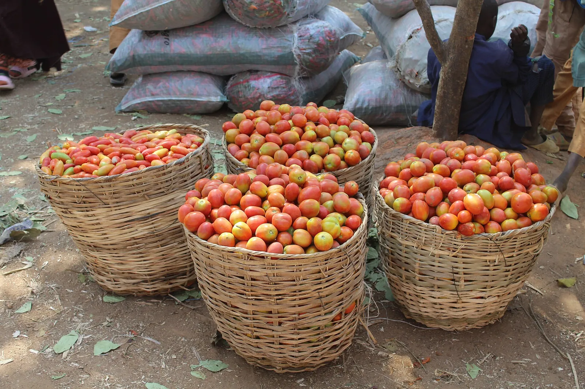

Plants
129 species, grouped by botanical family, because crop rotation works by family.

A few to know


Each links to its own page, where the photo is credited. All 129 are listed below by family.
Amaranth family (Amaranthaceae)
Asparagus family (Asparagaceae)
- Asparagus Asparagus officinalis
Banana family (Musaceae)
- Banana Musa spp.
Borage family (Boraginaceae)
- Borage Borago officinalisalso starflower
- Lacy phacelia Phacelia tanacetifolia
- Russian comfrey Symphytum x uplandicum
Brassicas (Brassicaceae)
- Arugula Eruca sativaalso rocket, roquette
- Cabbage Brassica oleraceaalso broccoli, kale, cauliflower…
- Horseradish Armoracia rusticana
- Mustard greens Brassica junceaalso mustard
- Radish Raphanus sativus
- Rutabaga Brassica napusalso swede
- Sweet alyssum Lobularia maritima
- Turnip Brassica rapaalso bok choy, napa cabbage, mizuna
Buckwheat family (Polygonaceae)
Carrot family (Apiaceae)
- Carrot Daucus carotaalso Nantes carrot, Danvers carrot, Chantenay carrot…
- Celery Apium graveolensalso celeriac
- Cilantro Coriandrum sativumalso coriander
- Dill Anethum graveolens
- Fennel Foeniculum vulgarealso herb fennel, Florence fennel
- Lovage Levisticum officinale
- Parsley Petroselinum crispum
- Parsnip Pastinaca sativa
Cashew family (Anacardiaceae)
- Mango Mangifera indica
Citrus family (Rutaceae)
- Lemon Citrus limon
- Lime Citrus x latifoliaalso Tahitian lime, Persian lime
- Mandarin Citrus reticulataalso tangerine
- Sweet orange Citrus sinensisalso orange
Cucurbits (Cucurbitaceae)
- Butternut Cucurbita moschataalso winter squash
- Cucumber Cucumis sativusalso vining cucumber, bush cucumber
- Luffa Luffa aegyptiacaalso smooth luffa, sponge gourd, dishcloth gourd…
- Melon Cucumis meloalso cantaloupe, muskmelon
- Summer squash Cucurbita pepoalso zucchini, acorn squash, bush squash…
- Watermelon Citrullus lanatus
- Winter squash Cucurbita maximaalso hubbard, kabocha, buttercup…
Currant family (Grossulariaceae)
- Currant Ribes spp.also gooseberry, Red currant, Black currant
Daisy family (Asteraceae)
- Artichoke Cynara cardunculusalso globe artichoke
- Calendula Calendula officinalisalso pot marigold
- Chamomile Chamaemelum nobilealso Roman chamomile
- Cosmos Cosmos bipinnatusalso garden cosmos
- Endive Cichorium endiviaalso escarole, frisee
- French marigold Tagetes patula
- French tarragon Artemisia dracunculus
- Lettuce Lactuca sativaalso leaf lettuce, butterhead (Bibb / Boston), romaine (cos)…
- Purple coneflower Echinacea purpureaalso echinacea
- Radicchio Cichorium intybusalso chicory
- Sunflower Helianthus annuusalso giant single-stem sunflower, dwarf or branching sunflower
- Yarrow Achillea millefolium
- Zinnia Zinnia elegansalso common zinnia
Elder family (Adoxaceae)
- Elderberry Sambucus canadensisalso American elderberry
Grape family (Vitaceae)
- Grape Vitis spp.also American grape, European grape
Grasses (Poaceae)
- Cereal rye Secale cerealealso winter rye
- Corn Zea maysalso maize, sweet corn, supersweet corn…
- Oats Avena sativa
- Sorghum Sorghum bicoloralso grain sorghum, broomcorn, milo
Heath family (Ericaceae)
- Blueberry Vaccinium corymbosumalso highbush blueberry
Honeysuckle family (Caprifoliaceae)
- Honeyberry Lonicera caeruleaalso haskap
Iris family (Iridaceae)
- Crocus Crocus spp.also Dutch crocus
Kiwi family (Actinidiaceae)
- Hardy kiwi Actinidia argutaalso kiwiberry
- Kiwifruit Actinidia deliciosaalso kiwi
Laurel family (Lauraceae)
- Avocado Persea americana
Legumes (Fabaceae)
- Chickpea Cicer arietinumalso garbanzo bean
- Common bean Phaseolus vulgarisalso pole bean, bush bean
- Cowpea Vigna unguiculataalso black-eyed pea, southern pea, vining cowpea…
- Crimson clover Trifolium incarnatum
- Edamame Glycine maxalso vegetable soybean, soybean
- False indigo bush Amorpha fruticosa
- Fava bean Vicia fabaalso broad bean, tall fava, dwarf fava
- Hairy vetch Vicia villosa
- Lentil Lens culinaris
- Lima bean Phaseolus lunatusalso butter bean, bush lima, pole lima
- Pea Pisum sativumalso bush pea, climbing pea
- Runner bean Phaseolus coccineusalso scarlet runner bean, climbing runner bean, dwarf runner bean
- White clover Trifolium repens
- Wild lupine Lupinus perennis
Loosestrife family (Lythraceae)
- Pomegranate Punica granatum
Malabar spinach family (Basellaceae)
- Malabar spinach Basella albaalso Ceylon spinach, vine spinach, Malabar greens
Mallow family (Malvaceae)
Mint family (Lamiaceae)
- Anise hyssop Agastache foeniculum
- Basil Ocimum basilicum
- Lavender Lavandula angustifoliaalso English lavender
- Lemon balm Melissa officinalis
- Marjoram Origanum majoranaalso sweet marjoram
- Oregano Origanum vulgare
- Rosemary Rosmarinus officinalis
- Sage Salvia officinalis
- Spearmint Mentha spicataalso mint
- Summer savory Satureja hortensis
- Thyme Thymus vulgaris
Morning-glory family (Convolvulaceae)
- Sweet potato Ipomoea batatas
Mulberry family (Moraceae)
- Fig Ficus carica
- Red mulberry Morus rubraalso mulberry
Myrtle family (Myrtaceae)
- Feijoa Acca sellowianaalso pineapple guava
Nasturtium family (Tropaeolaceae)
- Nasturtium Tropaeolum majus
New Zealand spinach family (Aizoaceae)
- New Zealand spinach Tetragonia tetragonioidesalso warrigal greens, Botany Bay spinach
Nightshades (Solanaceae)
- Eggplant Solanum melongenaalso globe eggplant (standard / American), Italian eggplant (oval), Asian eggplant (long / slender)…
- Pepper Capsicum annuumalso chile, jalapeno, bell pepper…
- Potato Solanum tuberosumalso first early potato (new potatoes), second early potato, maincrop potato (storage)
- Tomatillo Physalis philadelphica
- Tomato Solanum lycopersicumalso bush tomato, vining tomato
Oleaster family (Elaeagnaceae)
- Autumn olive Elaeagnus umbellata
Olive family (Oleaceae)
- Olive Olea europaea
Onion family (Amaryllidaceae)
Passionflower family (Passifloraceae)
- Passionfruit Passiflora edulisalso passion fruit
Persimmon family (Ebenaceae)
- American persimmon Diospyros virginianaalso persimmon
Rose family (Rosaceae)
- Apple Malus domesticaalso standard apple, dwarf apple
- Apricot Prunus armeniaca
- Black chokeberry Aronia melanocarpaalso aronia
- Blackberry Rubus fruticosus
- Peach Prunus persicaalso nectarine, standard peach, genetic dwarf peach
- Pear Pyrus communisalso European pear
- Plum Prunus domesticaalso European plum, standard plum, dwarf plum
- Quince Cydonia oblonga
- Red raspberry Rubus idaeus
- Sour cherry Prunus cerasusalso tart cherry
- Strawberry Fragaria x ananassa
- Sweet cherry Prunus avium
Spiderflower family (Cleomaceae)
- Rocky Mountain bee plant Cleome serrulata